josteinskaar.no
Statisk generert side for å vise noen av mine prosjekter.
- Generert fra én YAML-fil i YAMLResume-format
- Publisert med GitHub Actions til GitHub Pages
- Det tekniske er laget ved agentisk utvikling, tekst og bilder er skrevet av meg
Utvikler
Statisk generert side for å vise noen av mine prosjekter.
Verktøy for å lage gode startlister for tekniske øvelser på friidrettsstevner, samt mulighet for å automatisk fylle ut resultater i etterkant.

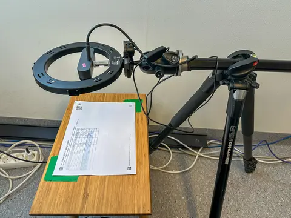
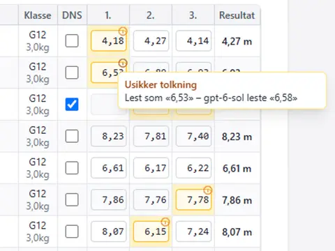
Dette er sandkassa hvor jeg lager ting for gøy eller eksperimenterer litt. Forresten: jeg liker rekursive akronymer.
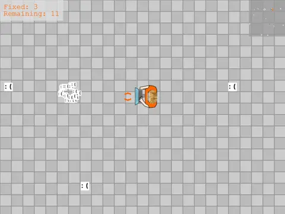
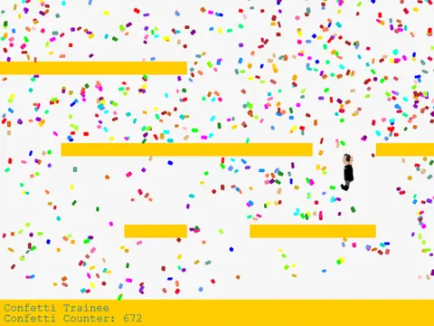
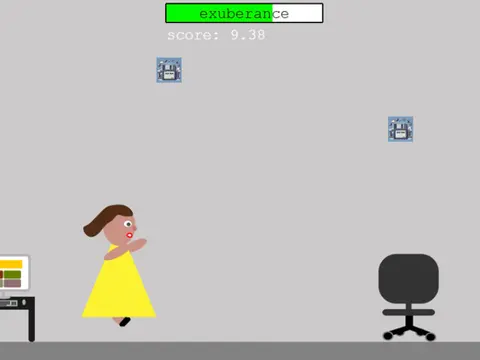
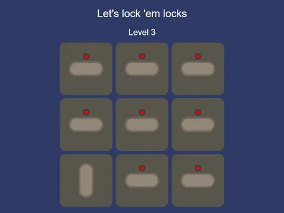
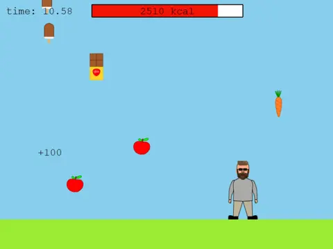
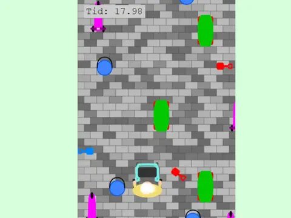
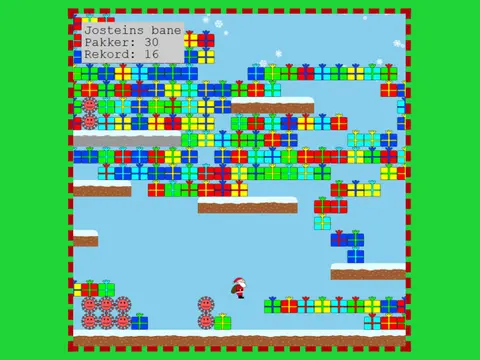
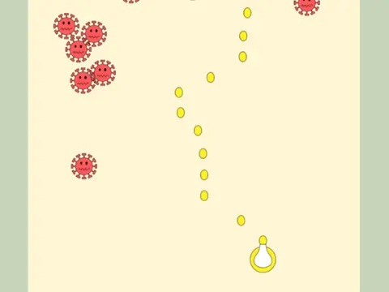
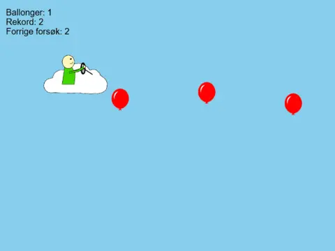
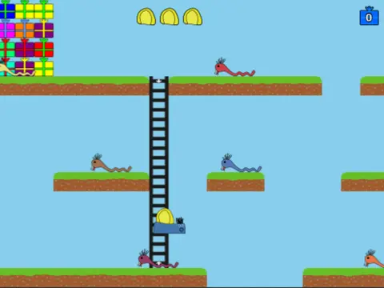
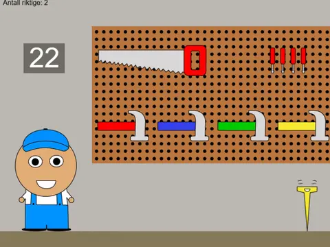
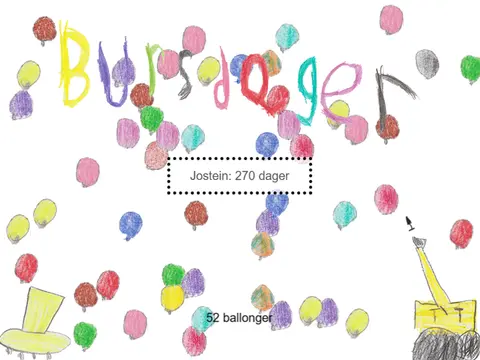